CIS 781:
Introduction to 3D Image Generation
Autumn 1998;
Instructor: Rick Parent
[[
NOTE: The cooler stuff is at
the BOTTOM of this page, in the more complex labs
]]
LAB1
- Wireframe rendering, 3D transformations,
Polygon Clipping, &tc
Remember that teapot,
you'll see it again a few times below.
It's the classic 'Utah Teapot', a historical
object in computer graphics.
LAB2
- Polygon scan conversion, Basic Illumination
model
Objects
here are flat shaded, IE a single color is used
across an entire face of an object. The images
below are compressed much more than they should
be, and have had the colors brightened (after
they were compressed, bad move, Vince).
Note that the last image
contains a spot light. The face shading causes an
interesting effect as some faces are inside or
outside the light's beam.
LAB3
- Complex lighting model, Solid modeling (3D
texture).
Gouraund
and Phong smooth shading are implemented. Note
how objects appear smooth compared to the flat
looking pictures from lab2. A side by side
example of Gouraund, Face, and Phong can be seen
respectively in the middle picture with all the
boxes. Notice how Phong shows a 'hot spot' or
bright point where the light source is reflected.
Gouraund misses this, but does vary the color
along the face. Face shading is just a flat color
across the entire side.
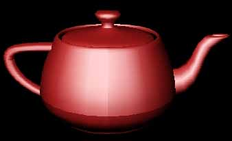
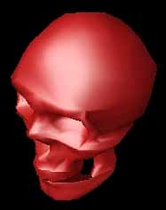
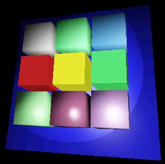
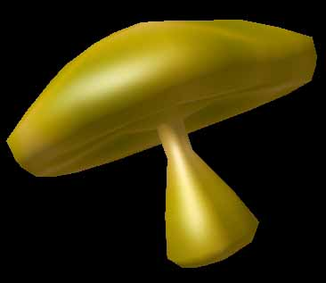
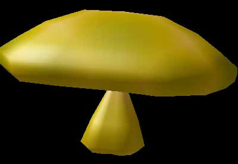
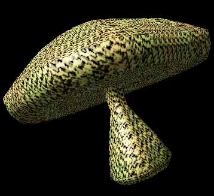

|
The last four mushrooms
have solid modeling functions which changes the
color along the surface.
LAB4
- Raytracer.
Objects are all
spheres (I will add more object types later).
Reflection and Refraction are done easily with a
raytracer, however it takes a long time to
generate the images. A 'long time' can range
anywhere from a few seconds up to a few days.
Images below with thousands of spheres that are
all reflective and refractive a 'long time' is
often many hours.
These images all
use many spheres, which would have been
impractical to place by hand. Instead I 'painted'
them in: I made two grayscale images and used the
brightness at each point to specify the height
and radius of a sphere.
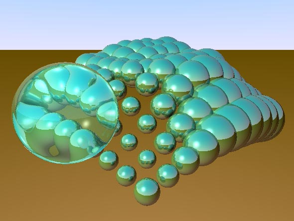
This image contains
101 spheres, all reflective, one refractive. It
took 10 minutes or so to render on my Pentium
133.
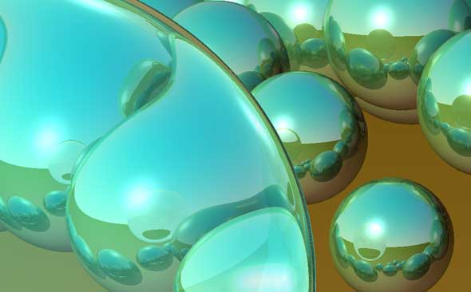
Detail of a portion
of the previous image.
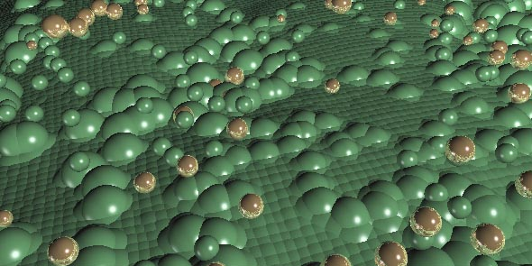
This image contains
over 10,000 spheres!
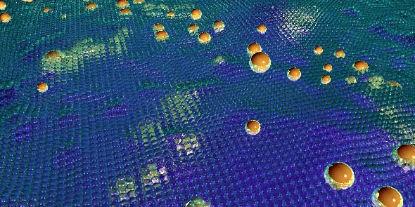
This image has over 20,000 spheres. ALL are
reflective and 10,000 are refractive.
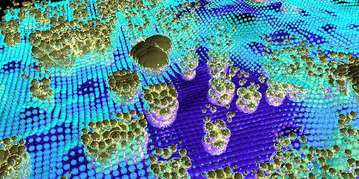
A variation on the previous (20,000+ spheres). No
post proccessing or color alteration was done,
this is the exact output of the raytracer.
|